Графики построены в R. В разделах 13 и 14 можно изменить код и выполнить его прямо в браузере.
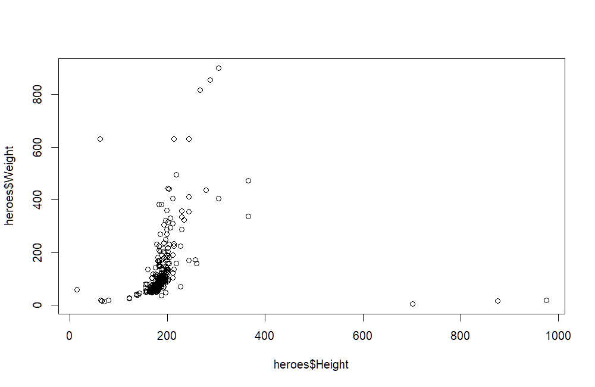
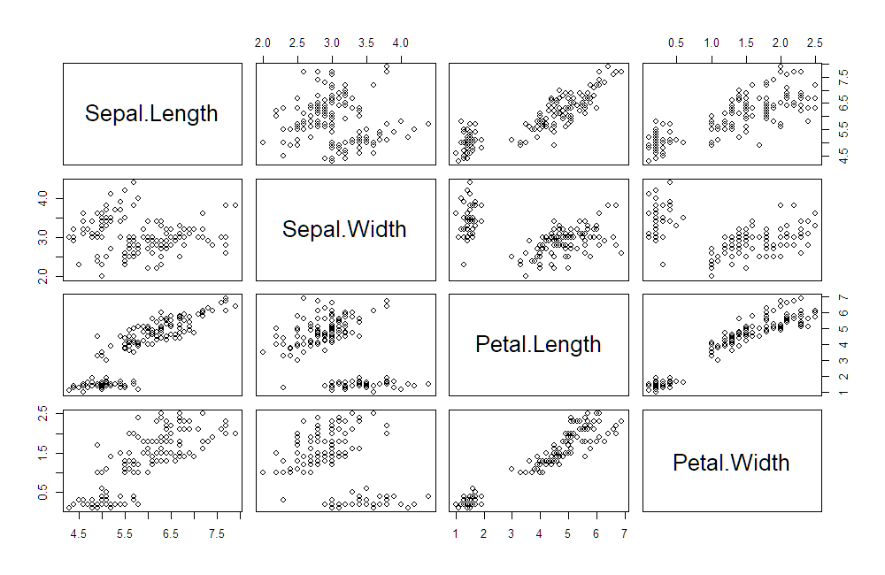
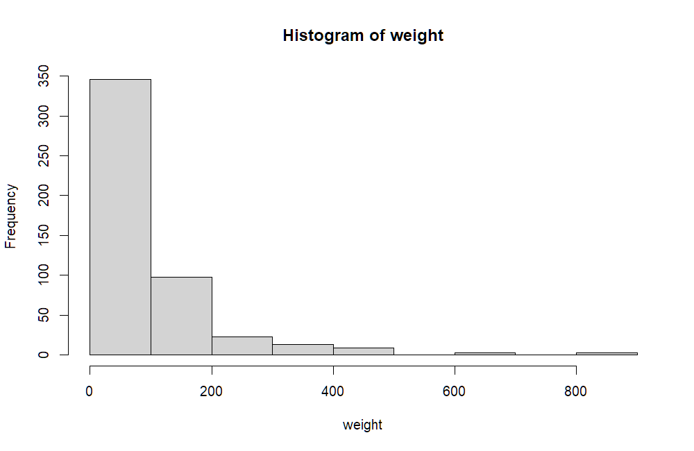
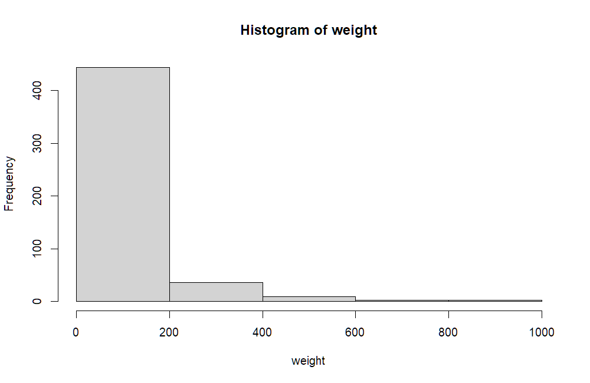
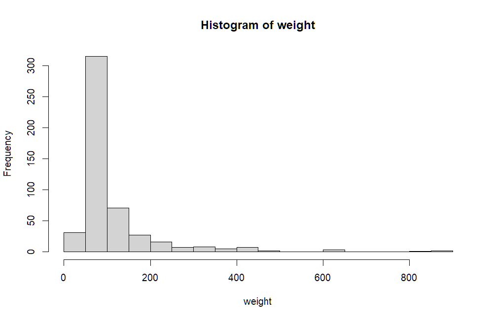
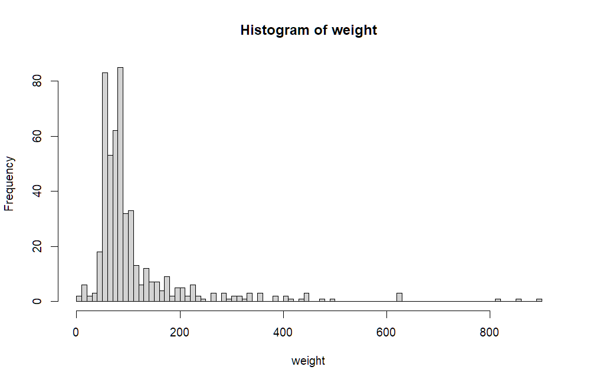
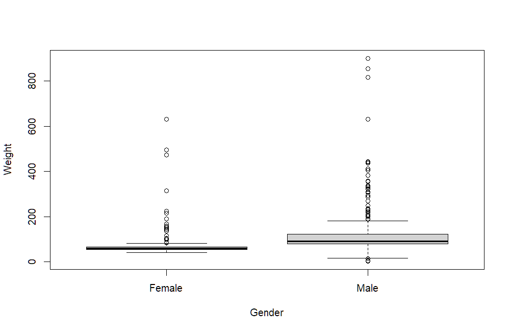
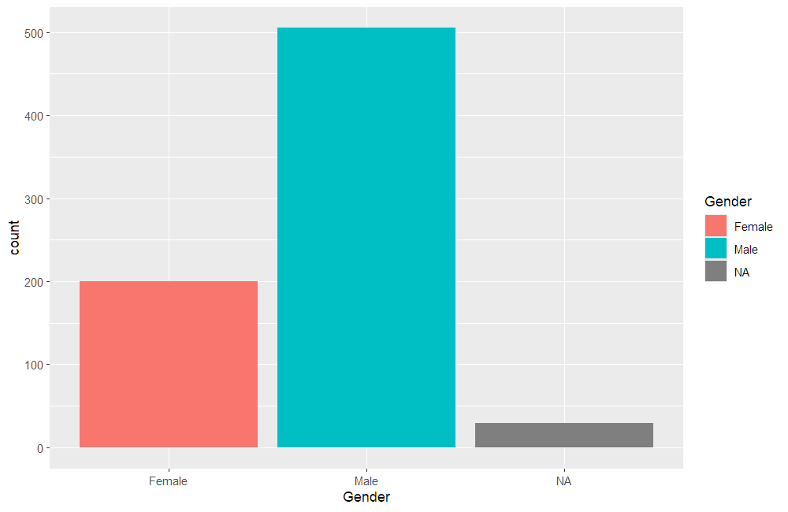
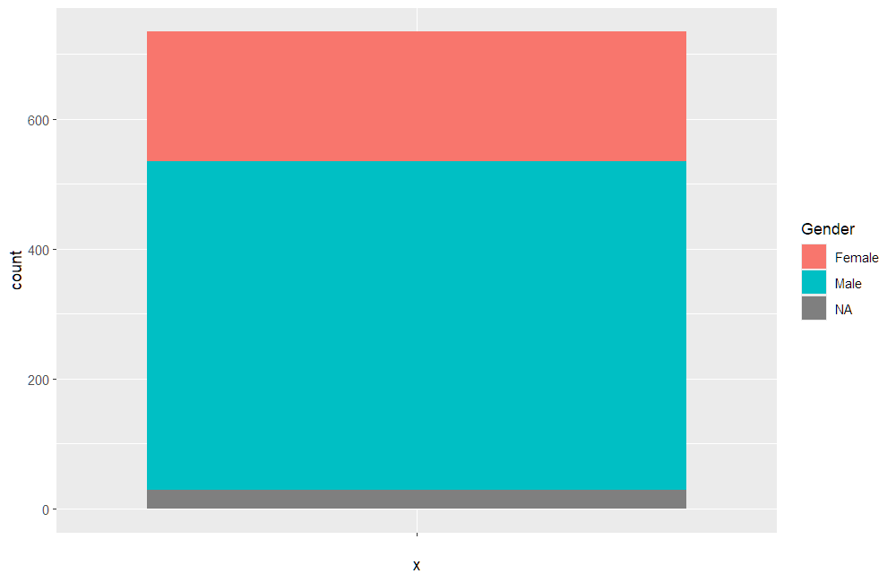
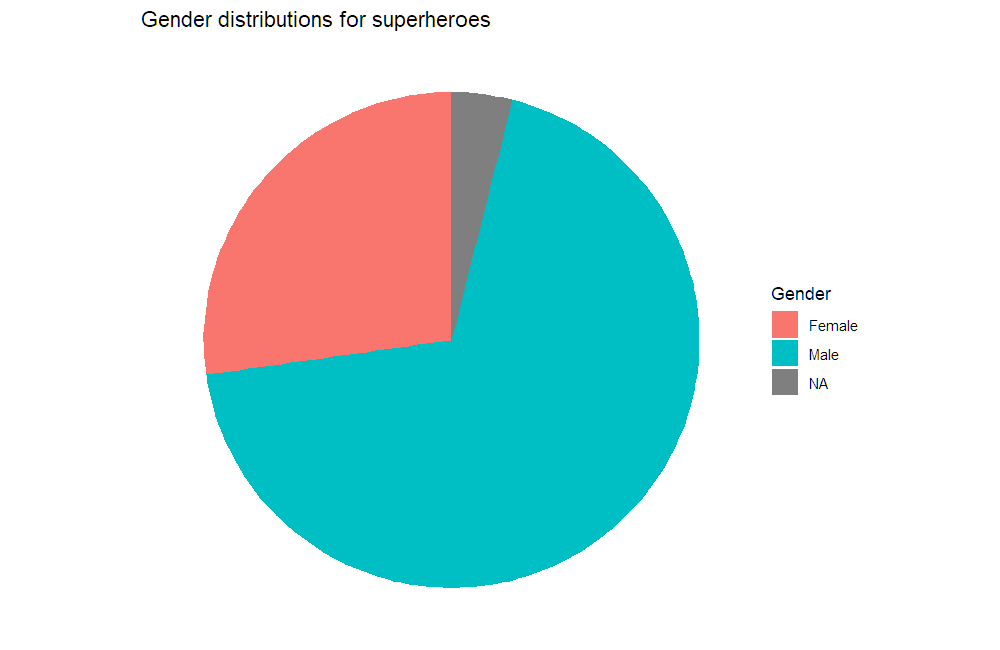
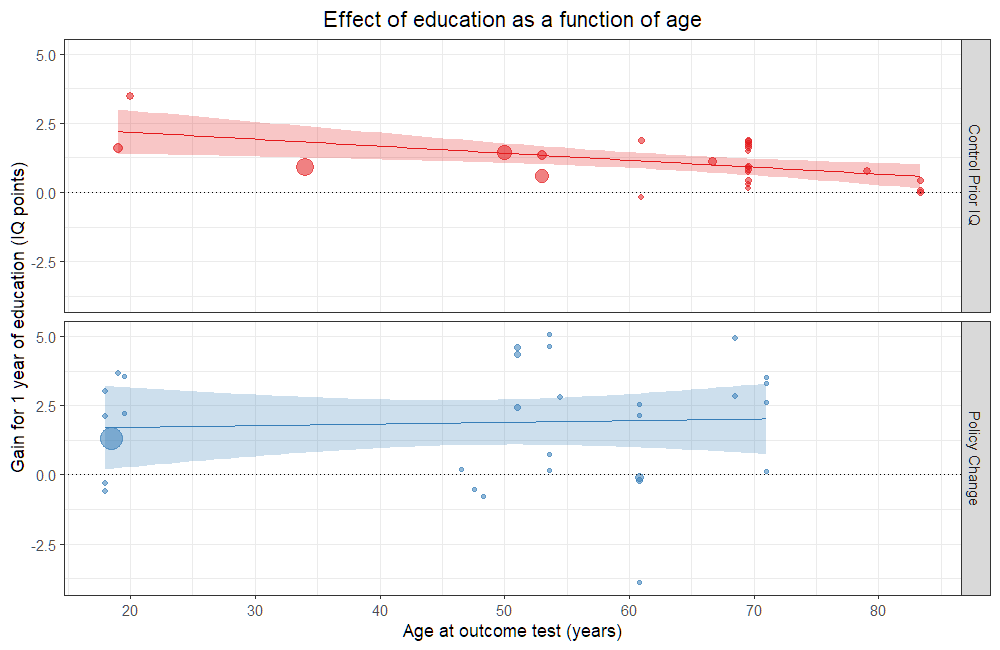
plotly::ggplotly(p)
plotly::plot_ly(heroes, x = ~Height, y = ~Weight, color = ~Gender, type = "scatter", mode = "markers")
DT::datatable(heroes, options = list(pageLength = 10, scrollX = TRUE))